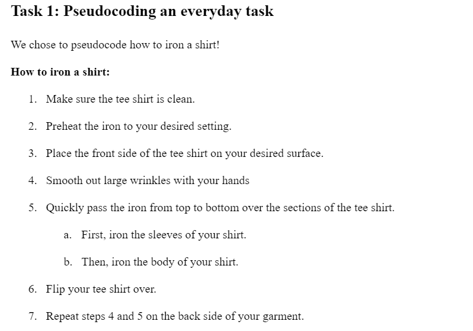
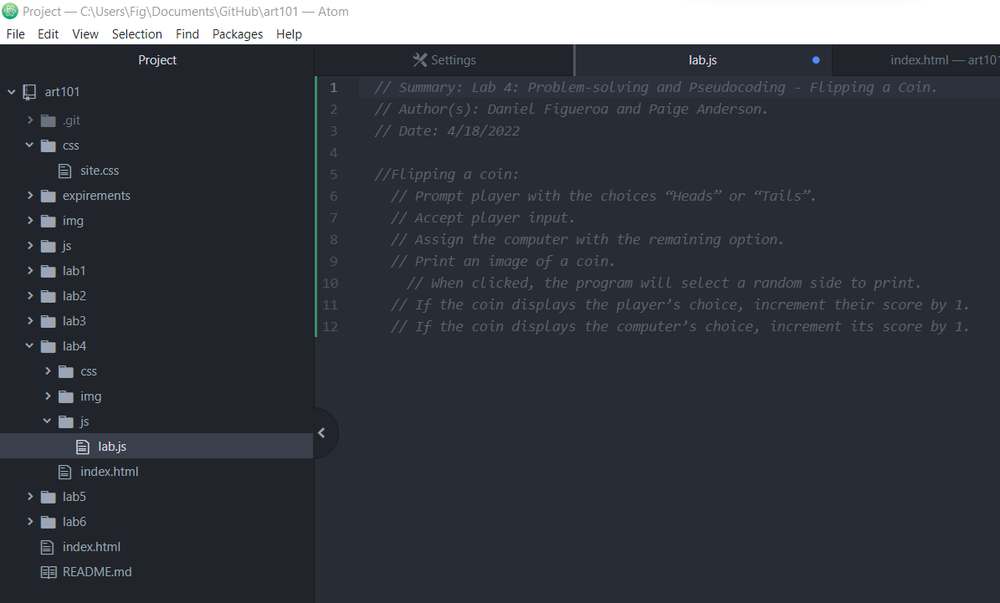

Lab 4: Problem-solving and Pseudocoding
Lab Summary
In this lab, we were expected to create steps for a task and turn it into pseudocode as a way to begin thinking about programming.
Problems
At first I had some difficulty following the steps of the lab because I was not sure how to use the 'pre' and 'code' tags like it wanted me to. I was not sure If I did it right or wrong but I tweeked my .js and index.html files until I was sure I was doing it right. I also used online resources to give me examples of how to use the tags.
Results
My partner and I chose to break down how to iron shirts into simple steps. This was a way to prep us before pseudocoding an actual computer task.
The following is pseudocode my partner and I came up with for flipping a coin.
The following is the list I coded into the HTML file based on a program that flips a coin and keeps score:
Flipping a coin:
1. Prompt player with the choices “Heads” or “Tails”.
2. Assign the computer with the remaining option.
3. Print an image of a coin.
4. When clicked, the program will select a random side to print.
5. If the coin displays the player’s choice, increment their score by 1.
6. If the coin displays the computer’s choice, increment its score by 1.